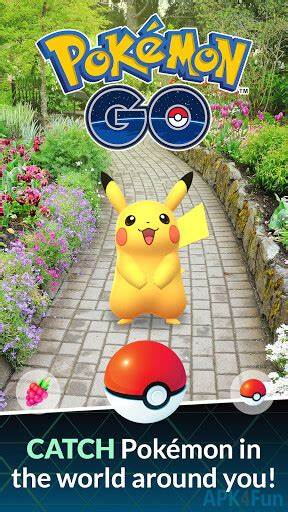
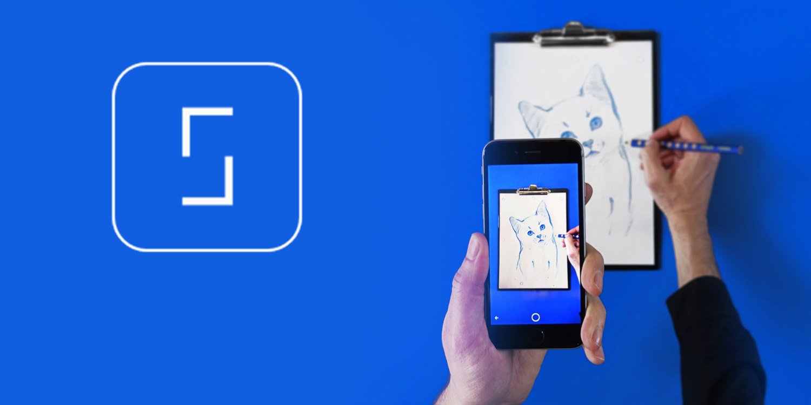
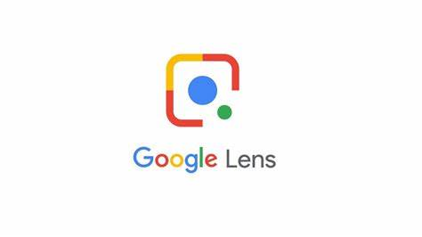
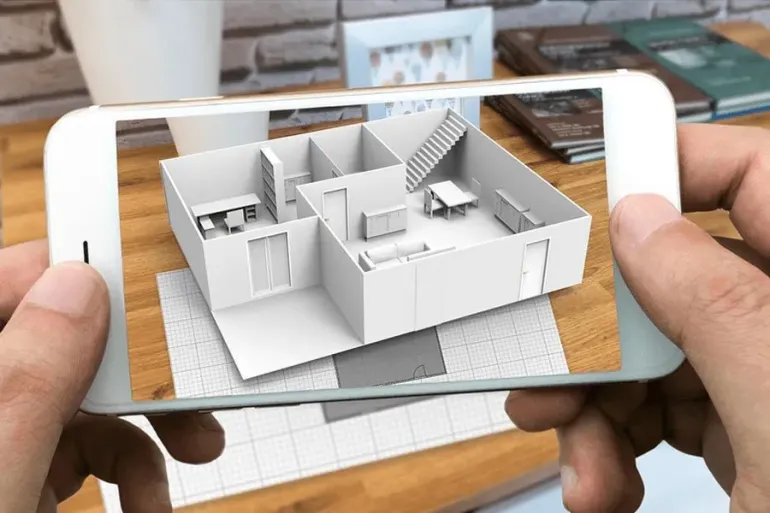
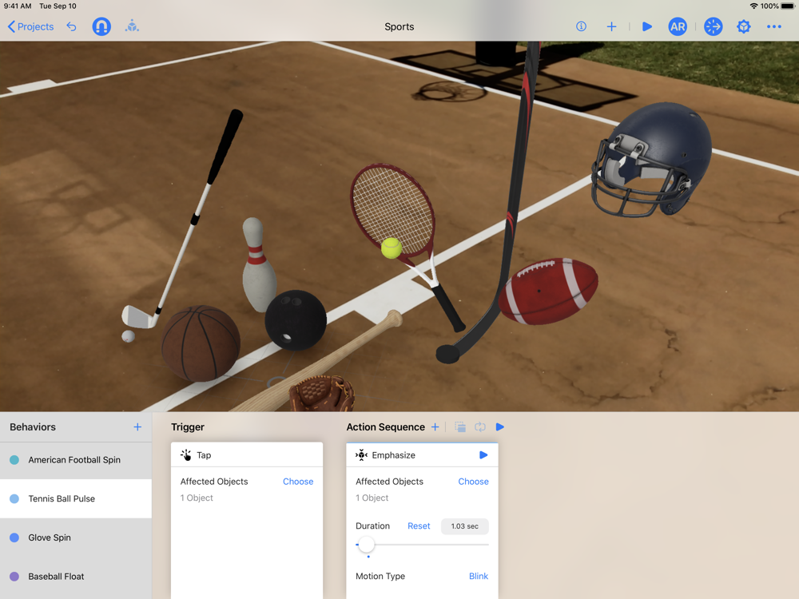

A diferencia de la Realidad Virtual, la AR está presente en muchos más ámbitos, debido a su versatilidad y a su ayuda a nuestro mundo, sin ser una inmersión en un mundo virtual. Se mueve en campos tan diversos como los proyectos educativos, ya que ayuda a que los más jóvenes aprendan, de una forma diferente y visual. Obviamente, como no podía ser de otro modo, en el sector del entretenimiento es ampliamente utilizada, llegando a campos de altísima importancia como la ingeniería o la medicina, pasando por la arquitectura.
-Apps de realidad aumentada para Android-
Ingress
Fue una de las aplicaciones punteras en el mundo de la realidad aumentada, y ha sido uno de los juegos en los que se ha inspirado el archiconocido Pokemon Go. De hecho, ambos han sido realizados por la misma desarrolladora, Niantic Labs.
Star Walk
¿A quién no le gusta mirar al cielo y contemplan a las estrellas? Pues esta app de realidad aumentada permite precisamente eso. Para todos aquellos aficionados a la astronomía, Star Walk permite ver y aprender mucha más información acerca de estrellas, constelaciones, planetas, cometas y más cuerpos celestes.
SketchAR
SketchAR es una de las apps de realidad aumentada que te permiten dibujar sin ser un as con el lápiz. Gracias a ella puedes ver cualquier diseño que quieras plasmado en el papel. Lo único que tienes que hacer es enfocar al papel con tu teléfono móvil y calcar el dibujo que quieras hacer. Puedes ver mejor cómo funciona esta app de realidad
Google Lens
Google Lens es una aplicación de realidad virtual creada por el gigante tecnológico. Su funcionamiento es sencillo, pero a la vez ofrece múltiples posibilidades
Al enfocar a un objeto, persona, animal o texto la app utiliza su sistema de machine learning para reconocerlo, y ofrecer distintas acciones a realizar. Es decir, no sugiere acciones genéricas, sino que las adapta al objeto que estés enfocando.
Además, es compatible con otras aplicaciones como Google Fotos, Google Assistant o Google Maps. AR Plan 3D
Se trata de una aplicación gracias a la cual puedes medir cualquier sala de forma rápida y con la máxima exactitud. Una vez definidas las medidas de la estancia, puedes crear planos de planta en 2D o 3D. Otras opciones son la posibilidad de medir puertas y ventajas o de compartir la información a través de redes sociales o por correo electrónico.
Reality Composer
Como su propio nombre indica, Reality Composer es un programa de realidad virtual que permite crear objetos para añadirlos al entorno virtual. Con esta app se pueden crear objetos virtuales en formato .USDZ y editables en herramientas de diseño 3D. Los objetos creados se pueden editar desde el propio programa, modificando su diseño, tamaño o las acciones que harán al interactuar con ellos.
